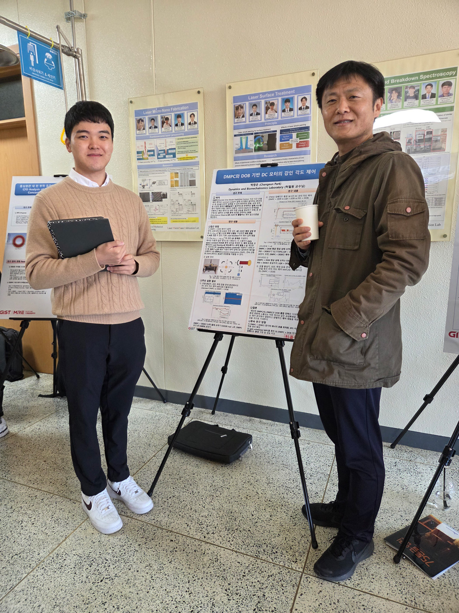
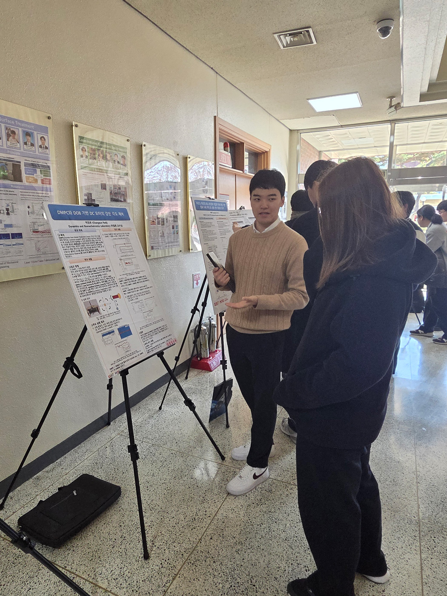
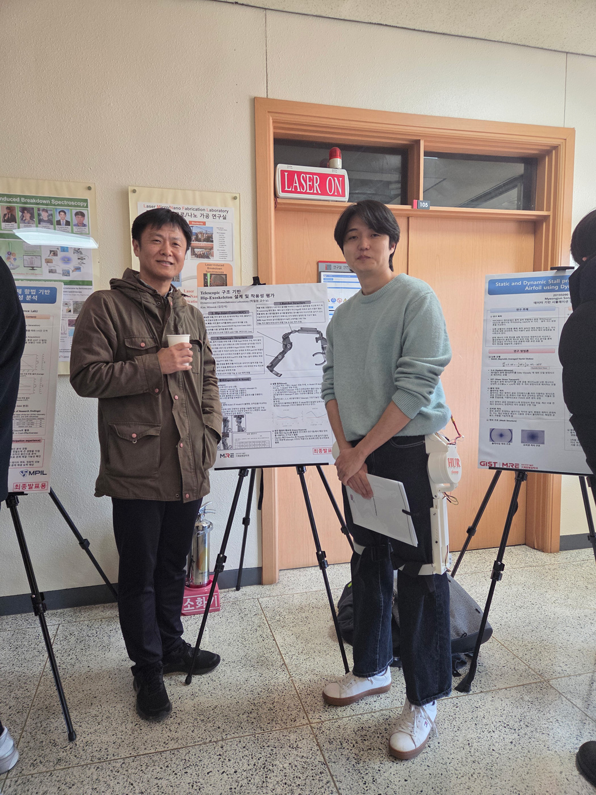
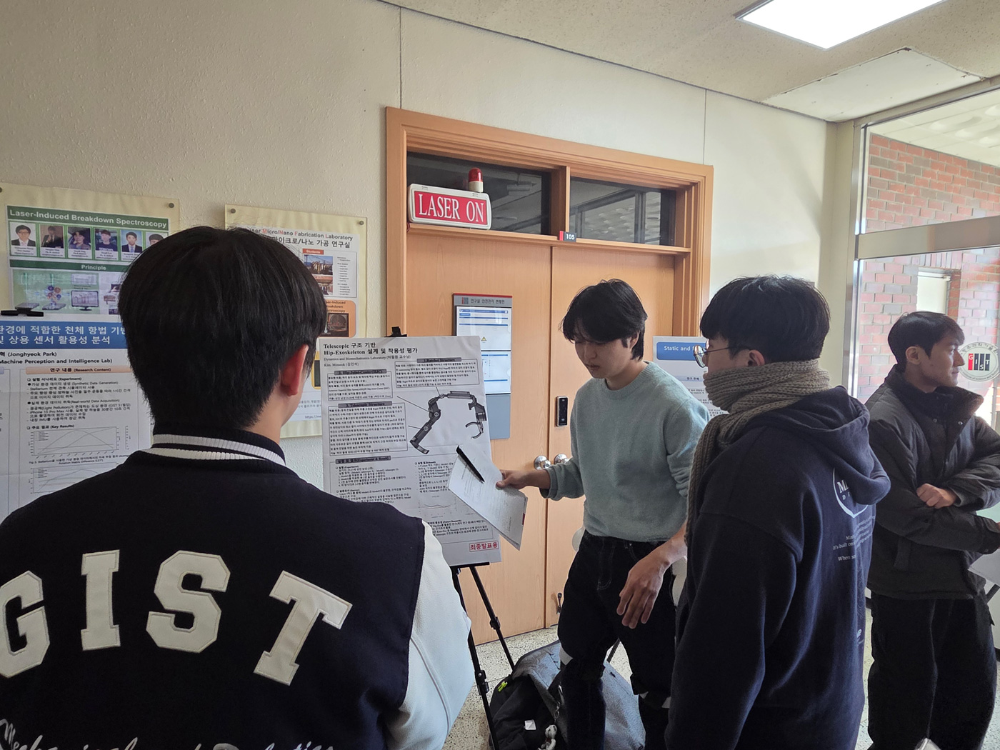
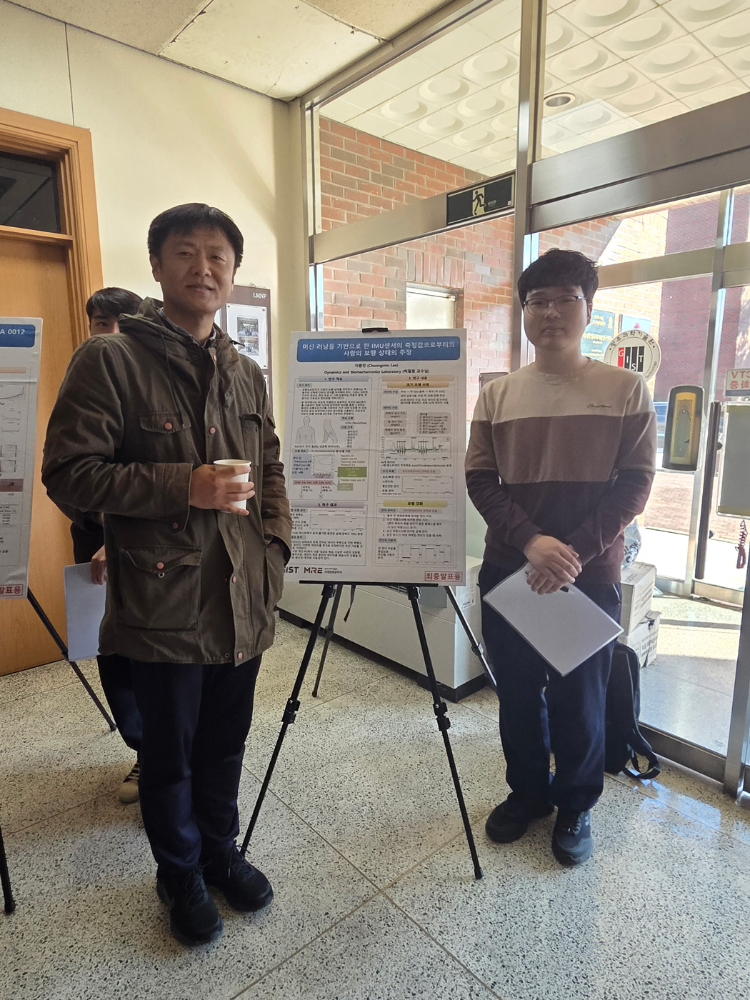
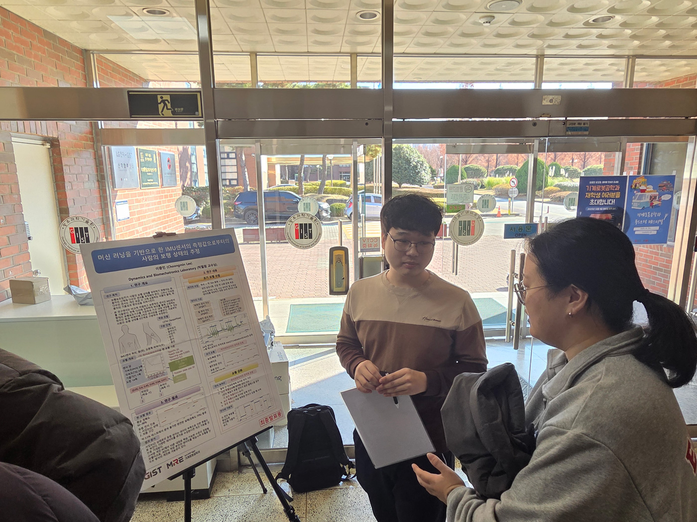
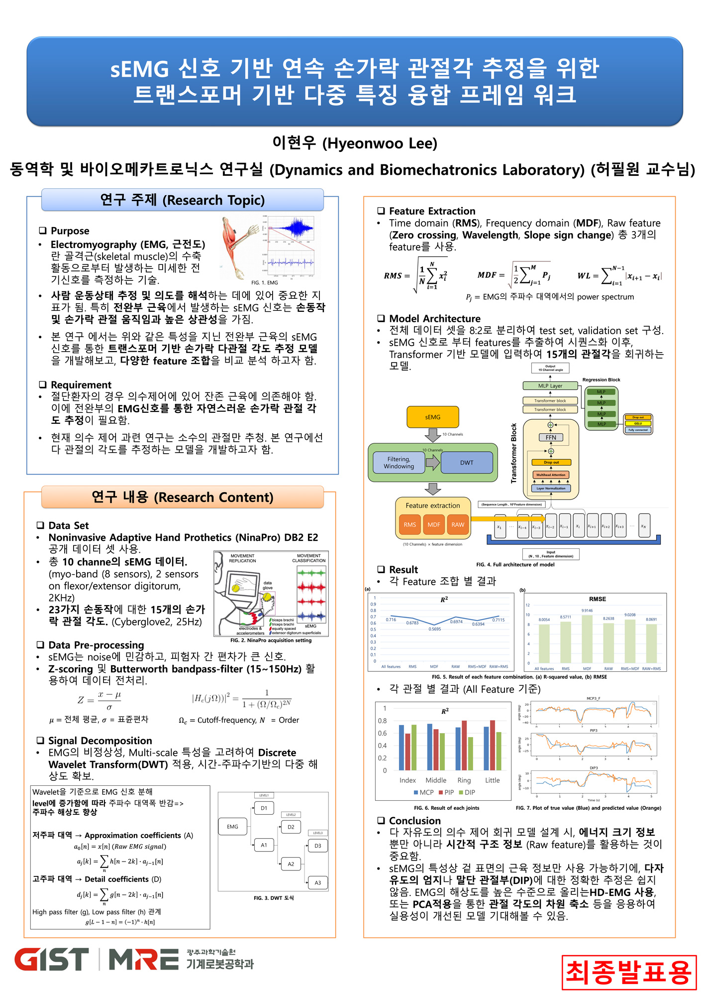

작성자: 허필원
올해부터 새롭게 포스터 형식으로 진행된 학사논문 발표회에서 우리 연구실의 4명의 학부생들이 한 해 동안의 연구 성과를 발표했습니다.
2025년 12월 9일, GIST 기계공학부 학사논문 발표회가 열렸습니다. 기존의 PPT 발표 형식에서 벗어나 올해는 포스터 발표로 진행되어, 보다 자유롭게 연구 내용을 공유하고 심사위원 및 참관객들과 깊이 있는 대화를 나눌 수 있었습니다.
우리 연구실에서는 총 4명의 학부생이 발표에 참여하였습니다:
박창은: DMPC와 DOB 기반 DB 모터의 강인 각도 제어 — 모델 불확실성에 강인한 다자유도 모터 제어 기법을 제안하였습니다.
이현우: sEMG 신호 기반 연속 손가락 관절각 추정을 위한 트랜스포머 기반 다중 특징 융합 프레임워크 — 근전도 신호로부터 손가락 움직임을 정밀하게 예측하는 딥러닝 모델을 개발하였습니다.
김민석: Telescopic 구조 기반 Hip-Exoskeleton 설계 및 착용성 평가 — 사용자 체형에 적응하는 신축형 엉덩이 외골격 로봇을 설계하고 편의성을 검증하였습니다.
이충민: 머신 러닝을 기반으로 한 IMU 센서의 측정값으로부터의 사람의 보행 상태 추정 — IMU 센서 데이터를 활용해 보행 패턴을 분류하는 머신러닝 알고리즘을 구현하였습니다.







특히 박창은 학생은 이번 발표회에서 우수논문상을 수상하는 영예를 안았습니다. 모터 제어 분야에서 실용적이면서도 이론적으로 탄탄한 연구를 인정받은 결과입니다. 진심으로 축하드립니다!
이번 발표를 마친 학생들은 각자의 새로운 여정을 시작합니다. 박창은, 이현우, 김민석 학생은 KAIST 대학원으로 진학하여 연구를 이어갈 예정이며, 이충민 학생은 해외 유학을 준비하고 있습니다. 우리 연구실에서 쌓은 경험이 앞으로의 연구 생활에 든든한 밑거름이 되기를 바랍니다.
한 해 동안 열심히 연구에 매진한 학부생들 모두 수고 많으셨습니다. 앞으로의 활약을 기대하며, HUR Group은 언제나 응원하겠습니다! 🎉
참석자 명단: 허필원, 박창은, 이현우, 김민석, 이충민